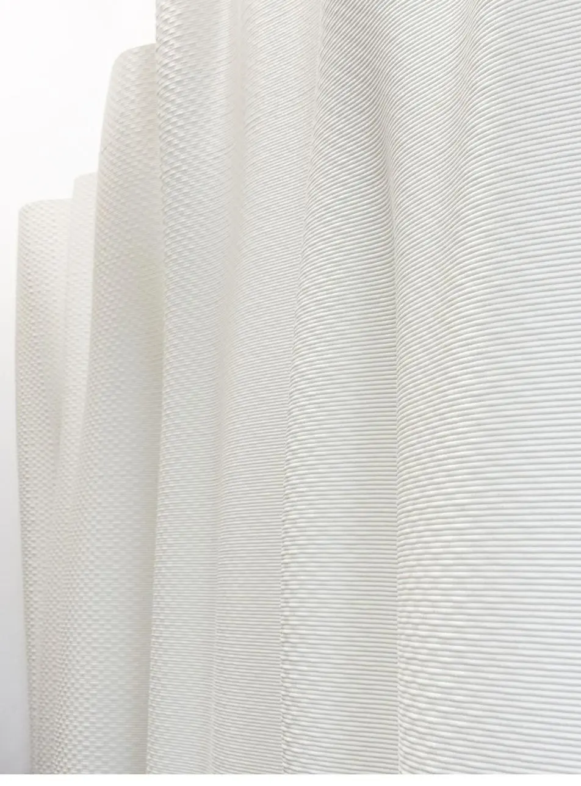
Partner A01 / 03LJC / LabA layered approach
Layer 000 / 046Print progress
00 / 10Section
Scroll to print
Layer 46 / 46
Z 9.14 m · 8 in layer · built · drag to turn
Z 9.14 m · 8 in layer · built · drag to turn
LJC Innovation Lab / St. Louis Opera Theater
A layered approach
One architectural component, taken from AI-assisted sketch to a full-scale 3D-printed prototype — with the Opera as the testing ground.
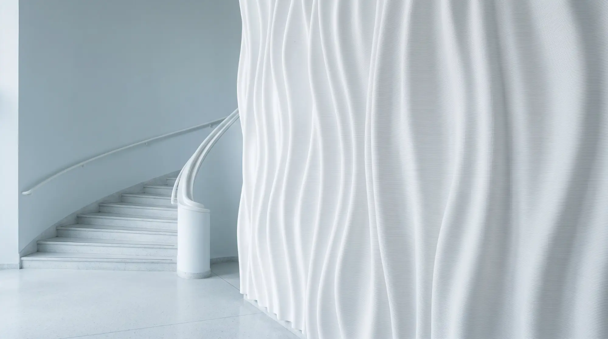
Render 01 / 03 · Wave wallThe wall, built
Printed at full scale
Layer lines, ridges and real depth at hand height. What you see is how it was made.
Process / Method01 · scroll to stack the steps
Six steps, one prototype
The lab takes a single architectural component the whole way: from AI-assisted exploration to a physical object people can touch.
Step 01 / 06
- Step 01
Explore and refine
Choose one architectural component and push it with AI-assisted design and workflows.
- Step 02
Make it printable
Translate the concept into fabrication-ready 3D geometry: panelised, toleranced, toolpath-aware.
- Step 03
Print small, in house
Test and improve the component through iterative small-scale 3D-printed mockups on our own printer.
- Step 04
Bring in a manufacturer
Evaluate materials, scalability and fabrication feasibility with a partner, with cost in the room from day one.
- Step 05
Make it repeatable
Establish a workflow that connects design exploration to physical production, so the next component is faster.
- Step 06
Install at 1:1
Print and install a full-scale prototype in the RBB lobby, where the whole office walks past it.
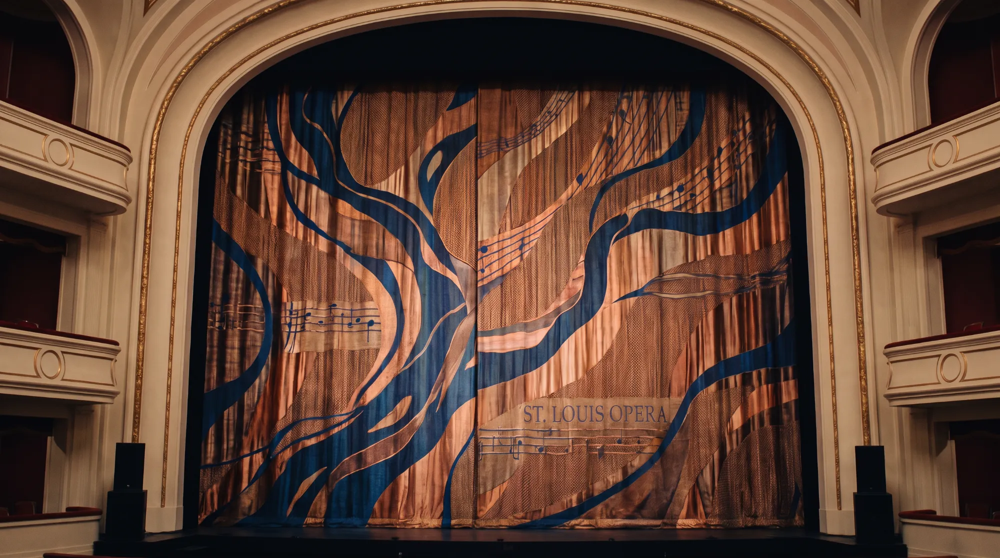
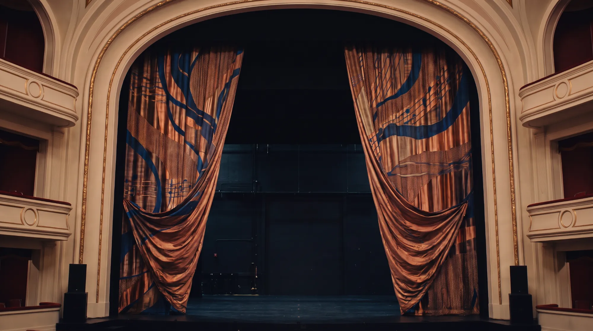
02 / Testing ground
Why the Opera.
Story, material and spectacle. The curtain goes up on the three things a printed wall has to carry.
Why the Opera / Testing ground02
A theater is the right test
Opera is built on story, material and spectacle. Those are exactly the three things we want a printed component to prove it can carry.
01
The wall tells the building's story
Not a finish applied at the end, but a surface generated from the ideas of the house: curtain, drama, sound.
02
The print process becomes the ornament
Layer lines, ridges and real depth at hand height. What you see is how it was made.
03
A surface that pulls people through
Full-height, legible from across the lobby, and changing as you climb past it.

Reference
The house curtain — fold, weight, and the pause before the story starts.
Conceptual studies / Three sources for the geometry03 · scroll to turn each study
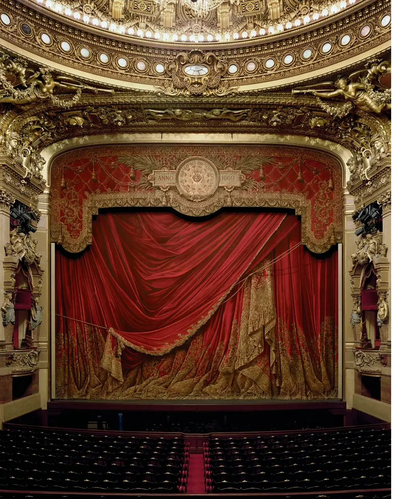
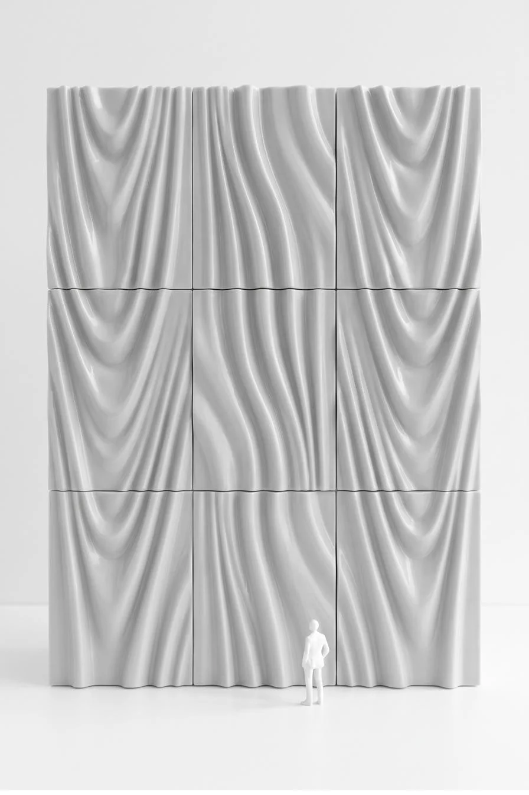
Study 01 / 03 · ReferenceStudy 01 / 03 · Ambient occlusionStudy 01 / 03 · Render
01 · Opera curtain
The curtain, frozen
The gathered folds of a house curtain, held still in print. Soft drape reads from across the lobby; the ridges land at hand height.
01 · Reference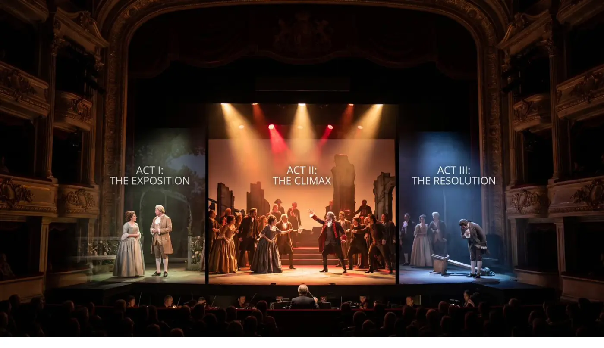
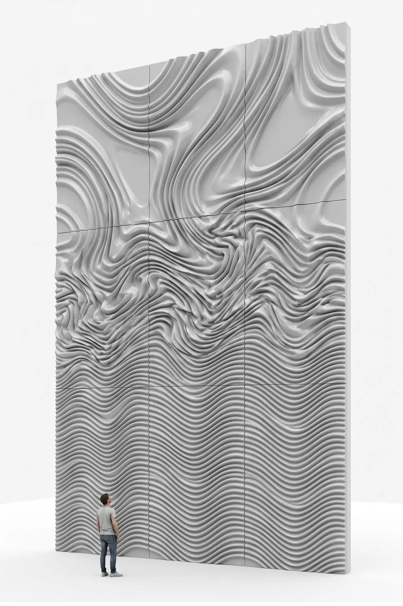
Study 02 / 03 · ReferenceStudy 02 / 03 · Ambient occlusion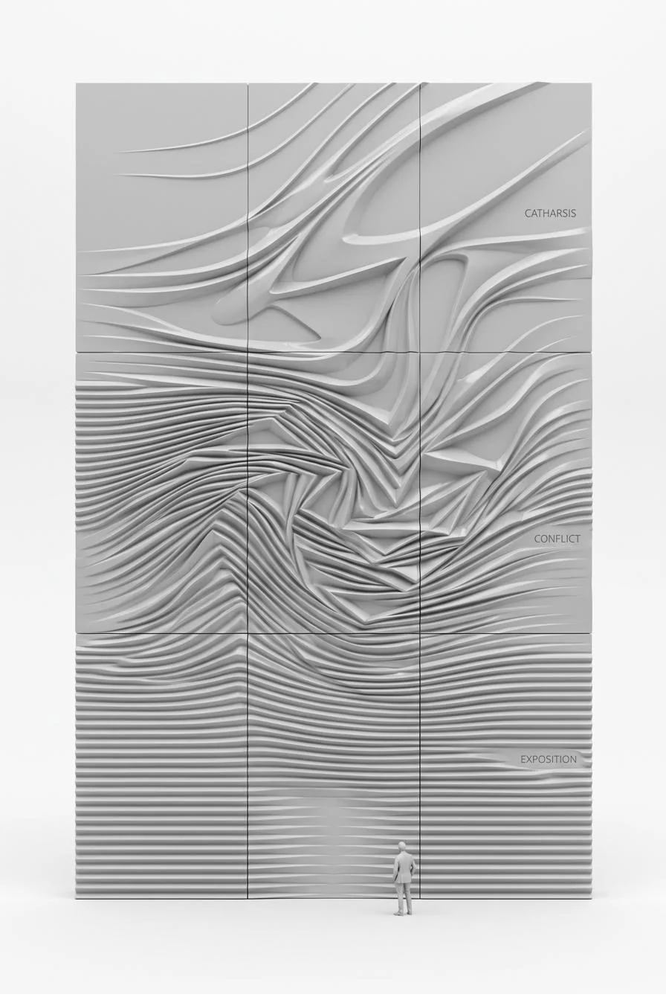
Study 02 / 03 · Render02 · Dramatic arc
Three acts in relief
Calm layer lines at the base build into turbulence at the landing and resolve as you reach the top. You climb through the story.
01 · ReferenceStudy 03 / 03 · ReferenceStudy 03 / 03 · Ambient occlusion
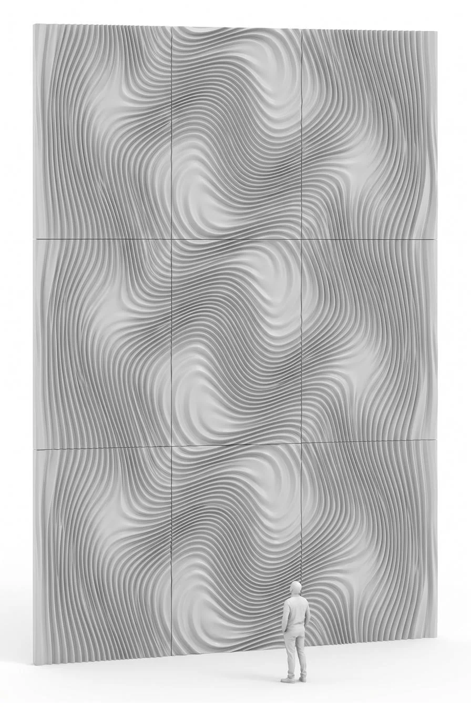
Study 03 / 03 · Render03 · Sound waves
Sound made solid
The amplitude, movement and bounce of sound in the room, mapped into surface depth. Every ridge is a continuous toolpath.
01 · Reference01 Curtain02 Dramatic arc03 Sound waves
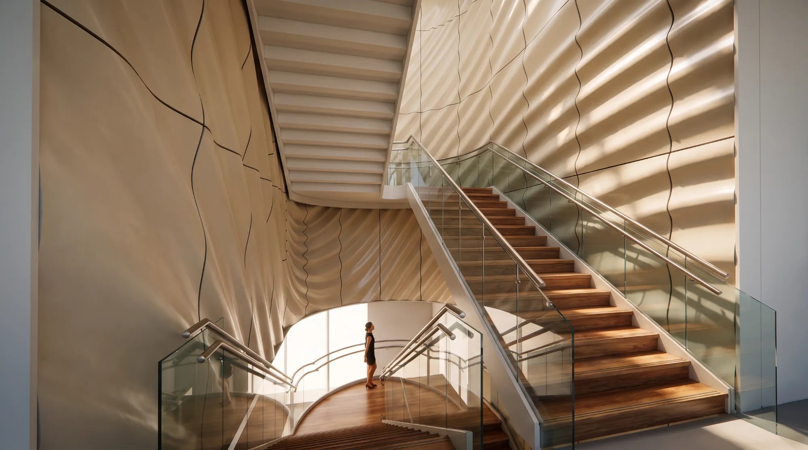
04 / Decision 1
Location.
Three walls in the current plans could carry the component. One of them does everything we need.
Location analysis / Three prime walls04
Tall, seen by everyone, shaped for the concept
We analyzed the current plans for a wall that meets all three. Keep scrolling, or pick a site on the plan.
Ground floor plan · pick a site
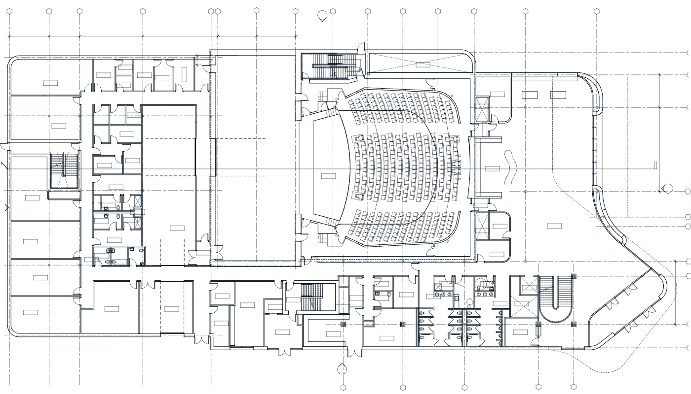
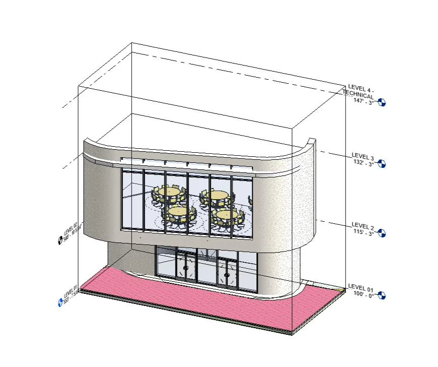
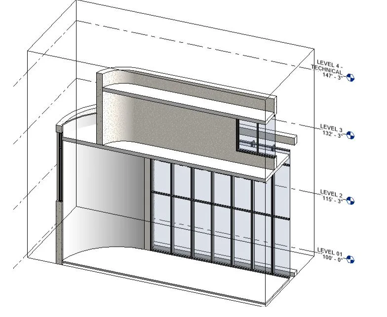
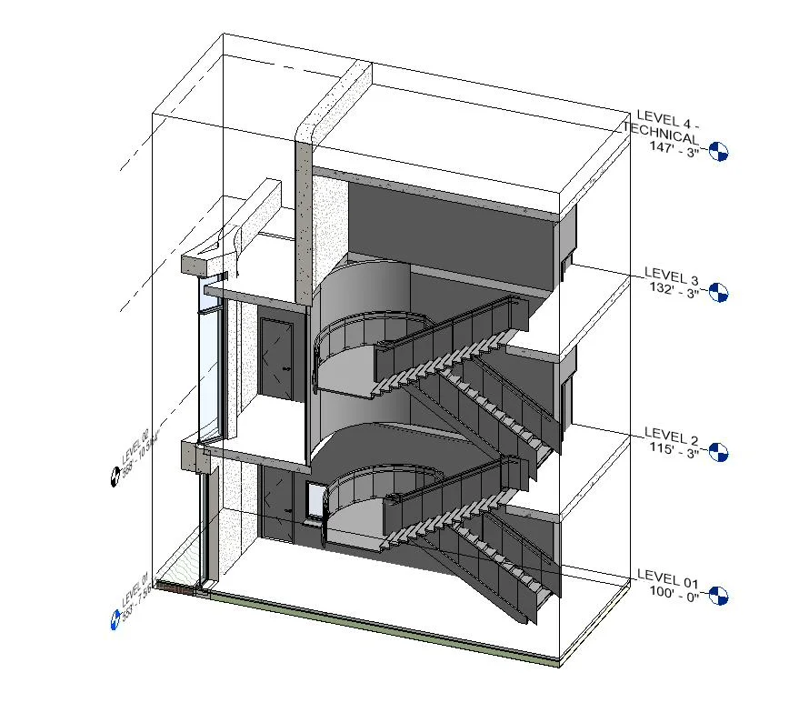
C · Main staircaseThe grand staircase / Two studies, same camera05
Curtain or wave
Drag the handle between the curtain study and the wave study. Switch cameras under the image.
Panel seams shown as drawn — final joints follow the chosen partner's print bed.
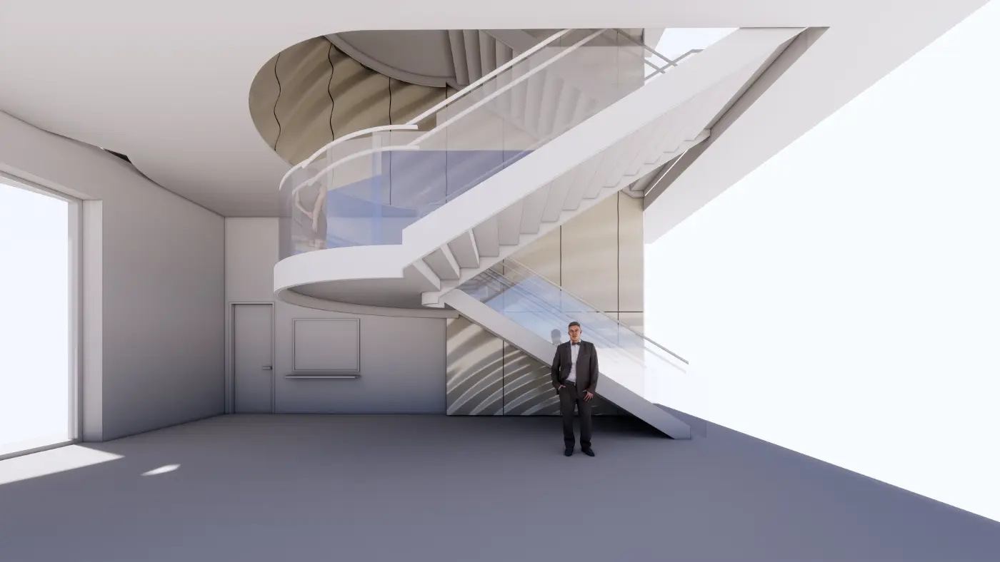
◂ ▸
Option 1 · Curtain
Option 2 · Wave
The stair in 3D / Rhino model06 · drag to orbit, wheel to zoom
Walk around the wall
The grand stair modelled with the wave wall in brushed metal. Orbit freely.
opera_stairScan to view in AR
Left · dragOrbit
Right · dragPan
WheelZoom
Opera stair · Rhino model
Loading model
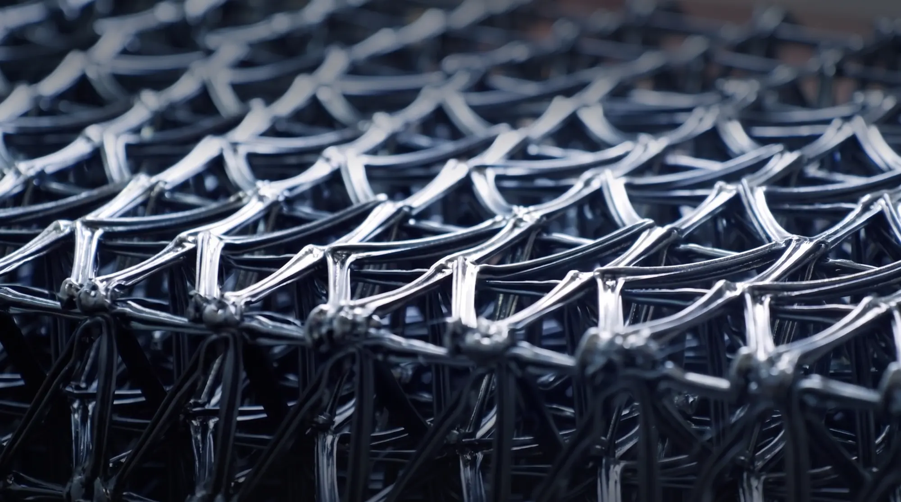
07 / Decision 3
Fabricators.
Three partners who already print at architectural scale. Polymer, concrete, lattice.
Fabricators / Three partners, three materials07
Who prints the wall
Three fabricators quoted the same 4'×8' lobby mockup. Each one is a different material system — and a different answer to what the layer line looks like.
Partner A / Polymer · email estimate
Circdal · Printerior
Robotic polymer extrusion — an even, paintable layer line in a proprietary PETG wood-fibre material, satin finish. Light panels; mounting system customised to follow the curve.
32 sfOne panel, 4'×8', standard colour
$148/sfInterior wall, surface + mounting
2–3 wksProduction and install, stock colour
$5,478Mockup, delivered with supports
| Mockup scope | Basis | Cost |
|---|---|---|
| Mockup panel PETG wood fibre, satin, standard colour | 4'×8' · printed surface | $3,000 |
| Shipping to the St. Louis office | Freight, quoted | $178 |
| Structure and supports Fastmount mounting system | Additional for the mockup | $2,300 |
| Mockup total | Panel, shipping and supports | $5,478 |
Timing
Two to three weeks using stock colours. Custom colour adds time — Printerior asked whether we have a colour requirement.
Cost reduction
The $148/sf rate is above standard panel pricing because of the curved-wall design-build work. Savings come from simplifying the mounting.
Open items
Custom colour requirement · wall assembly detail for an exterior bid · scope of the $2,300 supports allowance.
Printerior · Robotic arm printing a full-height wave panel
Partner B / Concrete · proposal 10.15.2026
Pikus 3D
Printed concrete — a coarse, mineral layer line proven in public interiors. One sculptural 4'×8' 3DCP panel priced turnkey, with structural supports and attachment included. Heavy; rigging required.
34.5 sfOne panel, 4'×8', 12" max depth
779 lbPanel weight, hollow 7,500-psi 3DCP
5 wksConcept to delivery
$12,902Mockup, delivered and installed
| Mockup scope | Basis | Cost |
|---|---|---|
| Mockup panel Sculptural 3DCP, 7-stage GFR terrazzo finish | 34.5 sf · $194/sf · supports included | $6,696 |
| Freight one truck, St. Louis | Budget allowance | $4,240 |
| Installation Pikus-approved installer, 1-year warranty | Mockup only · no spider crane | $1,966 |
| Mockup total | Excludes sales tax | $12,902 |
Timing
Five weeks from concept to delivery. November and December are historically busy for Pikus.
Assumptions
Mockup on grade; attachments fasten to a structural wall. Spider-crane access is assumed for the Opera, not the mockup.
Full wall, for reference
Opera stair facade 2,300 sf · 96 panels · $386,534. Full proposal with freight, tax and install: $750,226.
Partner B02 / 03
Pikus · Mockup panel, bronze integral colour
Finish
Priced with A · 7-stage GFR terrazzo. Quartz aggregate and integral custom Pantone are the alternates.
Partner C / Lattice · proposal 10.19.2026 · recommended
Branch Technology
Freeform cellular lattice — carbon-fibre reinforced polymer, skinned to any finish. Very light, deepest relief, and the most innovative system of the three. Three lobby mockup options for the curtain concept; pick one.
| Branch scope | Option 1 | Option 2 | Option 3 |
|---|---|---|---|
| Branch panels $49.91/sf · backerboard, hardware, clips | $3,194 | $1,597 | $1,597 |
| Pre-finish $50/sf · premium, by Branch partner | $5,770 −$2,000 | $2,865 | $2,630 |
| Design assist geometry optimisation, shop drawings | $3,920 | $3,420 | $2,280 |
| PM & digital production fabrication model, toolpath | $800 | $600 | $600 |
| Shipping allowance, actual +5% | $1,000 | $1,000 | $1,000 |
| Grand total | $12,684 | $9,482 | $8,107 |
| By LJC / Clayco not in Branch scope | Field installation · backup wall and support structure | ||
Branch timeline · ~8 weeks from contract
Contract signed · by 11/6
Design finalization
Backup wall design · LJC / Clayco
Panel fabrication
Panel finish
Backup wall construction · LJC / Clayco
Shipping
Assembly
10/2311/611/2012/412/18
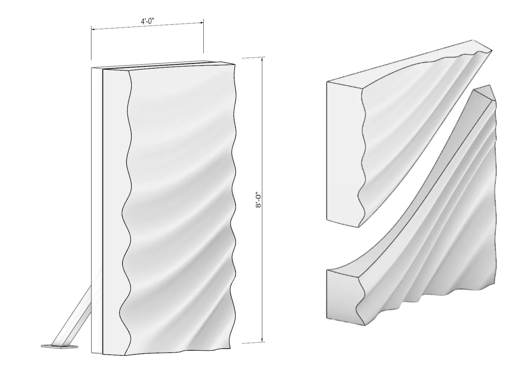

What it proves
- Panel-to-panel condition, with a non-rectilinear seam
- Largest continuous parametric design across panels
- Largest concave curve against the backplane
What it proves
- Panel-to-panel condition, top and bottom only
- Continuous design and non-rectilinear seam across the stack
- Minimal concave curve against the backplane
What it proves
- Parametric design on a single panel
- No panel-to-panel conditions or continuous design
- Minimal concave curve against the backplane
Precedents · click to enlarge
Cost comparison / One mockup, priced three ways08
Three mockups, side by side
Totals are what we would pay to have a 4'×8' panel delivered; installation is only included where it was quoted.
Printerior includes its mounting supports but not labour; Branch excludes installation and the backup wall; Pikus includes install and the attachment system.
09 / Decision 4
Road to 1:1.
Four stages. Each one ends with something physical on the table, and the last ends in the RBB lobby.
Road to 1:1 / Proposed sequence09
From desk print to lobby
Each stage ends with something physical on the table.
Down-select, in house
Small-scale prints of the shortlisted concept on the lab printer. Pick one.
Partner mockup
One bay of the wall printed by the chosen fabricator. Material, seams, finish and cost confirmed.
Full-scale print
1:1 prototype printed and finished. Workflow documented so the next component is faster.
Install
Prototype installed in the RBB lobby. Feedback from the office feeds the Opera design.
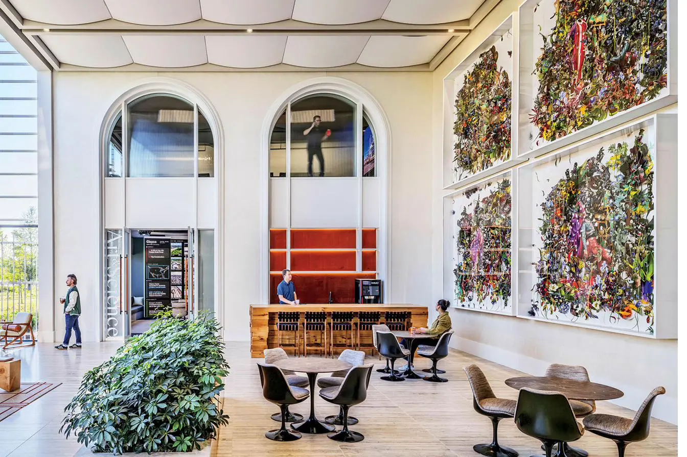
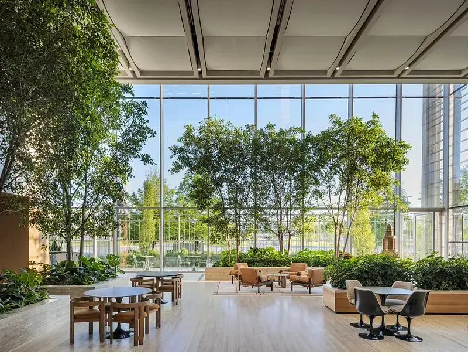
The ask / Today10
Four decisions, one wall
Everything else the lab can carry. These four we need from you. Tap to record the room's answer.
- 01
Confirm the stair wall
Lock the main staircase as the site so we design to its true height and curve.
- 02
Pick one concept
Choose which of curtain, dramatic arc and sound waves goes to small-scale print.
- 03
Approve a quote request
Let us ask one or two fabricators for a single-bay mockup price and lead time.
- 04
Reserve location in lobby
Hold a wall in the RBB lobby for the 1:1 prototype. It might be free standing.
Wave wall
Move up to reveal the stair · drag to orbit · wheel to zoom
Move your pointer to the centre
LJC / Innovation Lab
Activation through 3D printed innovation
Activation through 3D printed innovation
DesignProcessIterationParametricPrinted at scaleSt. Louis Opera TheaterLJC Innovation Lab
DesignProcessIterationParametricPrinted at scaleSt. Louis Opera TheaterLJC Innovation Lab